Activities
Scholarship
TAMA scholarships for graduating students, 2012 through 2019.
Scholarships
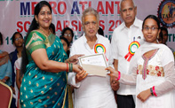
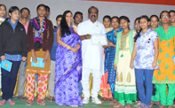
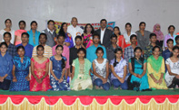
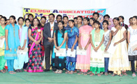
విద్యార్థులకరతాళధ్వనులమధ్యవేడుకగా 'తామా' వార్షికస్కాలర్షిప్స్ప్రదానం
డిసెంబర్ 3న హైదరాబాద్మహానగరంలో అట్లాంటా తెలుగు సంఘం (తామా) వార్షిక స్కాలర్షిప్స్ప్రదానోత్సవ కార్యక్రమం విజయవంతంగా జరిగింది. స్థానిక ఎంజెమార్కెట్రోడ్డులోని వి.వి. ఫంక్షన్హల్లో ఉదయం 9:30 గంటలకు మొదలైన ఈ కార్యక్రమానికి తెలంగాణ శాసనసభ స్పీకర్మ ధుసూదనాచారిగారు ముఖ్యఅతిధిగా హాజరయ్యారు. ముందుగా తామా స్కాలర్షిప్స్సమన్వయకర్త సీతవల్లూరుపల్లిగారు స్వాగతోపన్యాసంచేస్తూ తామా మరియు తామా స్వచ్చంద సేవా కార్యక్రమాలు ముఖ్యంగా 2005 నుంచి నిరంతరంగా తెలంగాణ మరియు ఆంధ్రప్రదేశ్లోని అన్ని జిల్లాల్లోని ప్రభుత్వ పాఠశాలల్లో చదువుకొని అత్యధిక మార్కులు సంపాదించిన విద్యార్థులకు ప్రదానం చేస్తున్న స్కాలర్షిప్స్గురించి వివరించారు. ముఖ్యఅతిధిగా హాజరైన తెలంగాణ శాసనసభస్పీకర్మ ధుసూదనాచారిగారు తామాని అభినందిస్తూ, ఇంకామరెన్నో తెలుగు సంఘాలు తామాను ఆదర్శంగా తీసుకొని ముందుకు వస్తే తెలంగాణ ప్రభుత్వం తరపున తమ సహాయసహకారాలు అందిస్తామన్నారు. అలాగే ఈ కార్యక్రమానికి హాజరైన ఇతర అతిధులు ఎమ్మెల్సీ సుధాకర్రెడ్డిగారు, రోటరీ క్లబ్ అఫ్హైదరాబాద్ప్రతి నిధులు నరేష్రాగిగారు , పాపాలుప్రసాద్గారు, రమాదేవిగారు, ప్రముఖ గైనకాలజిస్ట్డాక్టర్రమగారు మరియు ప్రముఖ సంఘ సేవకులు డాక్టర్హనుమంతరావుగారు ప్రసంగిస్తూ జన్మభూమి రుణం తీర్చుకోవాలనేగొప్ప ఆలోచనతో అట్లాంటా దాతలు ప్రభుత్వ పాఠశాలల్లో చదువుకొనే ప్రతిభగల విద్యార్థినీవిద్యార్థులకు స్కాలర్షిప్స్ ఇస్తూ చేయూతనివ్వడం వాళ్ళ సేవాతత్పరతకు నిదర్శనం అని కొనియాడారు. తదనంతరం అతిదులందరి చేతులమీదుగా విద్యార్థినీ విద్యార్థులకు స్కాలర్షిప్స్మరి యుఅభినందన పత్రాలు అందజేశారు. ఈ కార్యక్రమానికి హాజరైన నార్త్కెరోలినా ప్రవాసభారతీయురాలు జయవాసిరెడ్డి అప్పటికప్పుడు ఇద్దరు విద్యార్ధులకి ప్రత్యేక స్కాలర్షిప్స్ప్ర కటించడం మరియు క్షణాల్లో అందజేయడం కొసమెరుపు. విద్యార్థినీ విద్యార్థులు మాట్లాడుతూ తాము బాగా చదువుకొని ప్రయోజకులై తామా నిర్వహిస్తున్న స్వచ్చంద సేవా కార్యక్రమాలలో పాలుపంచుకుంటామనడం గర్వకారణం. అలాగే విద్యార్థుల తల్లితండ్రులు విరాళాలు అందించిన అట్లాంటావాసులందరికి ధన్యవాదాలు తెలియజేసారు. ఈ సందర్భంగా సంకల్ప నాట్యకళాక్షేత్రం అకాడమీవారు ప్రదర్శించిన శాస్త్రీయ మరియు జానపద నృత్యాలు అందరిని ఆకట్టుకున్నాయి. చివరిగా జాతీయగీతం జనగణమనతో కార్యక్రమం ముగియగా అందరికి తేనీయవిందు ఏర్పాటుచేసారు. ఈ సందర్భంగా దాతలు అందరికి పేరు పేరున ముఖ్యంగా పారామౌంట్సాఫ్ట్వేర్సొల్యూషన్స్ అధినేత ప్రమోద్సజ్జగారు, రవిశర్మగారు తదితరులందరికి తామా కార్యవర్గం మరియు బోర్డుసభ్యుల తరపున ప్రత్యేక కృతఙ్ఞతలు. అలాగే ఈ కార్యక్రమం 2005 లో మొదలవగా 2012 నుంచి విజయవంతంగా సమన్వయం చేసుకుంటూ ముందుకు తీసుకెళుతున్న సీతవల్లూరుపల్లిగారికి ప్రత్యేక అభినందనలు.| Donor Name | Amount |
|---|---|
| PARAMOUNT SOFT WARE SOLUTIONS | 4200 |
| RAVI SARMA | 1000 |
| KODALI SRINIVAS | 300 |
| VENKATREDDY MANDEDDU | 116 |
| SRINI GANGASANI | 350 |
| VIJAY KOTHAPALLI | 300 |
| SAIRAM SURAPANENI | 300 |
| RAVI KANDIMALLA | 300 |
| VIJU CHILUVERU | 300 |
| KRISHNA MOHAN PINNAMANENI | 300 |
| USHA MANDAVA | 116 |
| VIJAY KUMAR BHANDARI | 116 |
| ASHA VELLANKI | 116 |
| RADHA CHUNDURI | 116 |
| MAHESH PAWAR | 116 |
| MALATHI THADAVARTHI | 116 |
| RAMAKRISHNA BABDREDDI | 116 |
| MALLESHWARI | 116 |
| RANI CHEBROLU | 116 |
| VENKY GADDE | 116 |
| GOPAL TURAGA | 116 |
| SRINIVAS AYINALA | 116 |
| DURGA PRAKASH | 116 |
| GOWRI EDUPUGANTI | 116 |
| PRASANNA RUDRA | 116 |
| ZAH DOO LLC | 116 |
| SAILAZA JELLA | 116 |
| RAGI AKKINENI | 116 |
| PADMA NIMMAGADDA | 116 |
| SASHIDHAR KUMAR | 116 |
| RADHIKA VEMURU | 116 |
| HARSHA YERRANENI | 150 |
| NAGESH DODDAKA | 150 |
| SEETHA VALLURUPALLI | 116 |
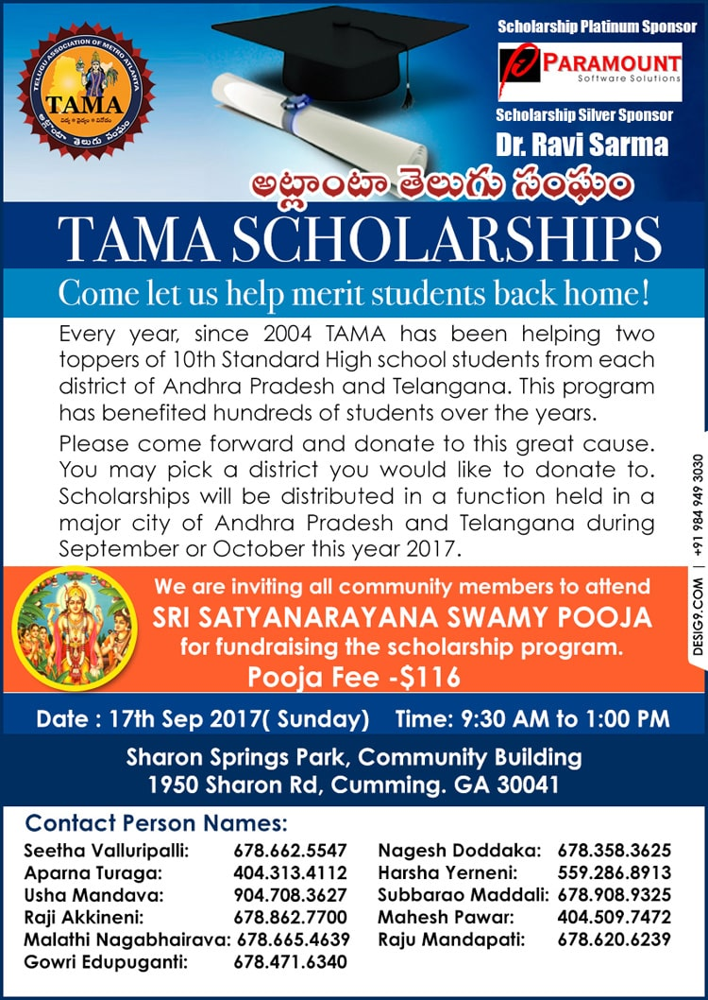
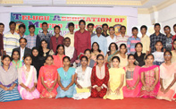
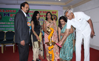
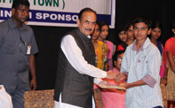
TAMA 2016 SCHOLARSHIP CEREMONY REPORT
On the morning of November 20th 2016 we reached Ravindrabharathi. Many of students were sitting on the lawn and waiting for the auditorium doors to open. As soon as the doors opened everyone started settling down inside. All of them were happy to share what district they were from and they are currently doing. Most of the students were admitted to IIIT and a few of them said they were doing BIPC and aiming to become a doctor. Some of the students expressed their gratitude to TAMA for giving them a scholarship. They said their parents are strugling financially. One student said all the meritorious awards are given to the private schools and he said he is very happy TAMA decided to give schoarships to meritoruous students from Govt and ZP schools only. A few students said they were very happy that because of the TAMA SCHOLARSHIP EVENT they were able to see their dream of visiting Hyderbad come true. One student said they do not have a house and they live in the park. One other student said his father disabled after an accident and his mother makes Rs 6000 every month. We began the ceremony with an introduction of TAMA and then the students and their families had breaskfast. We invited Dr. Rama Devi Papolu to the dias. Dr. Rama Devi congratulated the awardees and said concept of giving is more in USA than in India and asked the students to try to make India a better place. Seema Kumar, president of the Rotary Club of Hyderabad Midtown said she was very happy to be part of Scholarship Ceremony and congratulated the students and explained how rotary club trying to make India literate. Sudhakar Reddy Pathuri said he is very glad TAMA's continues to hold the scholarship project and he said Govt school are competing well with private schools and acheiving 10 out of 10 GPA. Asha Naidu presented two classical dance performances with her students. The audience was enthralled by the dances. The ceremony ended with the distribution of scholarship awards. TAMA is thankful to its loyal and sincere donors who make this event possible year after year. OUR DONORS ARE: PROMOD SAJJA, PARAMOUNT SOFTWARE SOLUTIONS, DR. RAVI SARMA, DR. SRINI GANGASANI, DEVENDER REDDY, PADMA KRISHNA REDDY, VIJU CHILUVERU, RAVI KANDIMALLA, SAIRAM SURAPANENI, KRISHNA MOHAN PINNAMANENI, USHA MANDAVA, RAM MADDI, VENKAT ADUSUMILLI, BHARAT MADDINENI, NAGESHWARA RAO DODDAKA, VENKAT MEESALA , MURALI BODDU, MAHESH PAWAR, SURESH PEDDI.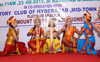
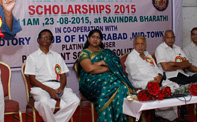
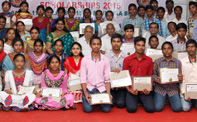
List of Meritorious students for Andhra And Telungana.
Scholarship Ceremony
Date : August 23, 2015Time : 9:00am to 1:00pm
Venue : Ravindrabharathi Mini Conference Hall.
TAMA SCHOLARSHIP 2015
PLATINUM SPONSOR- PARAMOUNT SOFTWARE SOLUTIONS
Students started arriving to Ravindra Bharathi at 7:30am from different parts of Andhra Pradesh and Telangana Regions. Students were accompanied by a parent, or guardian, or teacher. The TAMA Scholarship Project Cooridnator Seetha Vallurupalli and Board of Director Mahesh Pawar had a conversation with scholarship recipients as well as their parents and teachers. They expressed that they were very happy that TAMA is taking efforts to identify the district toppers and recognizing them with a scholarship award. They thanked TAMA and TAMA donors for putting on the scholarship event. Chittoor District Topper Aishwarya said her sister Susmitha was a recipient of the TAMA Scholarship in 2012 ,and she is very happy to receive the scholarship this year because that made her a favorite to her teachers. T. Sashikala from West Godavari said she already knew at the beginning of the year that TAMA gives scholarships to district toppers and when she got the results on 20th May receiving a 10 GPA, she was expecting letter from TAMA. She said her father was a daily wage worker and this money will help her for her college education. Many students expressed that they want to become TAMA Members and give scholarship to others in the future. The guests of the program were Former MLC and Eminent Educationist Chukka Ramaiah IIT, MLC Sudhakar Reddy Pathuri, Rotory founding member and philanthropist Prasad Papolu, Movie Actress Smt Kavitha, Rotory Club of Hyderabad Midtown President Ugam Raj Nahar. Smt Kavitha said if there was an organization like TAMA that helped her when she was a child, she would not have dropped out of school. Ugam Raj Nahar said they were very happy to be a part of TAMA SCHOLARSHIP PROJECT. Chukka Ramaiah Garu said Telugu people in America are very generous and want give back to the motherland and pointed out III T college students are facing lot of problems due to lack of facilities in the colleges. Seetha Vallurupalli TAMA Scholarship Project Coordinator and Mahesh Pawar TAMA Board of Director explained to the audience that this event is only possible with the help of generous donors. Kudos to PLATINUM SPONSOR PRAMOD SAJJA and donors Ravi Kandimalla, Dr.Ravi Sarma, Sandhya and viju Chiluveru, Krishnamohan Pinnamaneni, , Dr.Sreeni Gangasani, Dr. B. Mohan, Sairam and Sudha Surapanenni, Gondi Gandhi, Subbarao Vadrevu. Rajashekar Chunduri, Malleshwari Atluri, Venkat Meesala, Raghava Thadavarthi, Meher Lanka, Phani Duggirala, Seshuram Gonella, Ratan Eluganti, Vijay Kothapally, Nageshwar Rao Doddaka, Mohan Reddy Komati, Ranakumar Nadella, Usha Mandava, Aruna Kailasa, Jaya Papolu, Krish Gadde.TAMA Hosts 2015 Scholarship Awards Ceremony in Hyderabad
Atlanta, GA: Telugu Association of Metro Atlanta (TAMA) hosted its scholarship ceremony for 2015 recently at Hyderabad’s Ravindra Bharathi. The event was graced with the presence of prominent guests including former MLC and eminent educationist Chukka Ramaiah IIT, MLC Sudhakar Reddy Pathuri, Rotory founding member and philanthropist Prasad Papolu, movie actress Kavitha and Rotory Club of Hyderabad Midtown president Ugam Raj Nahar. Students started arriving at Ravindra Bharathi at 7:30 am from different parts of Andhra Pradesh and Telangana regions. Students were accompanied by a parent, or guardian, or teacher. TAMA Scholarship Project coordinator Seetha Vallurupalli and director of board Mahesh Pawar had a conversation with scholarship recipients as well as their parents and teacher who expressed happiness at TAMA’s initiatives at identifying the district toppers and recognizing them with a scholarship award. They thanked TAMA and TAMA donors for hosting the scholarship event. Chittoor district topper Aishwarya said her sister Susmitha was a recipient of the TAMA scholarship in 2012, and she is very happy to receive the scholarship this year because that made her a favorite of her teachers. T. Sashikala fromWest Godavarisaid she already knew at the beginning of the year that TAMA gives scholarships to district toppers and when she got the results on 20th May receiving a 10 GPA, she was expecting a letter from TAMA. She said her father was a daily wage worker and this money will help her with her college education. Many students expressed a desire to become TAMA members and give scholarships to others in the future. Actress Kavitha said if there was an organization like TAMA that helped her when she was a child, she would not have dropped out of school. Ugam Raj Nahar said they were very happy to be a part of the scholarship project. Chukka Ramaiah Garu said Telugu people inAmericaare very generous and want give back to the motherland. Seetha Vallurupalli and Mahesh Pawar, in their address, said the scholarship was only possible because of the generous support of donors like Platinum Sponsor Pramod Sajja and donors Ravi Kandimalla, Dr.Ravi Sarma, Sandhya and Viju Chiluveru, Krishnamohan Pinnamaneni, Dr. Sreeni Gangasani, Dr. B. Mohan, Sairam and Sudha Surapanenni, Gondi Gandhi, Subbarao Vadrevu. Rajashekar Chunduri, Malleshwari Atluri, Venkat Meesala, Raghava Thadavarthi, Meher Lanka, Phani Duggirala, Seshuram Gonella, Ratan Eluganti, Vijay Kothapally, Nageshwar Rao Doddaka, Mohan Reddy Komati, Ranakumar Nadella, Usha Mandava, Aruna Kailasa, Jaya Papolu and Krish Gadde.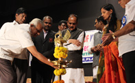
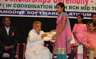
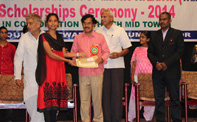
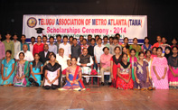
TAMA Hosts 2014 scholarship awards ceremony in Hyderabad
Atlanta, GA: Telugu Association of Metro Atlanta (TAMA) hosted its scholarship ceremony for 2014 on Sunday, September 21 at Hyderabad’s Ravindra Bharathi. The ceremony was graced by the presence of Telangana’s Deputy Chief Minister-cum-Revenue Minister Mahamood Ali, educationist Chukka Ramaiah IIT, film song writer and national Nandi award recipient Suddhala Ashok Teja, MLC Sudhakar Reddy, and Rotary President Sridhar. he students accompanied by parent, or guardian or teacher arrived at Ravindra Bharathi from different parts of Andhra Pradesh and Telengana region. TAMA Scholarship Project coordinator Seetha Vallurupalli greeted and conversed with scholarship recipients and their parents and teachers. They expressed their happiness that TAMA was making efforts in identifying the district toppers and recognizing them with scholarship awards. They thanked TAMA and TAMA donors for hosting the scholarship ceremony. Seetha Vallurupalli began the ceremony with the introduction of the scholarship project, noting that TAMA was awarding 46 scholarships to meritorious students of 13 districts from Andhra Pradesh and 10 districts from Telungana. (one boy and one girl from each district). Ashok Teja advised the students to use their time wisely and lauded them for performing well in their studies. He exhorted them to continue their efforts in future in reaching their goal so that one day they would be in a position to give scholarship to other students. Chukka Ramaih lamented that the government had neglected public schools for a long period and urged it to do more in reaching the poor and needy students. Sudhakar Reddy also reiterated that the government had been neglecting public schools and requested Deputy CM Mahamood Ali to undertake necessary changes in the education system so that government schools can have more resources to help the poor. Sridhar said that Rotary has always been helping people and was proud to support the scholarship project. Minister Mahamood Ali responded saying that the government was hiring a lot of extra police force to ensure that students in remote places can also attend the schools without fear. He assured the gathering that he will ensure that every child will attend school. All the dignitary guests at the event appreciated TAMA’S efforts in reaching out to the students and motivating them by giving scholarships to district toppers. TAMA’s scholarship ceremony was made possible with the generosity of the platinum sponsor Pramod Sajja of Paramount Software Solutions, Dr.Ravi Sarma, KrishanMohan Pinnamaneni, Ravi Kandimalla, Padma Krishna Reddy, Ram Mohan RaoVadlamudi, Vijay Kothapalli, Dr.Srini Gangasani, Goutham Gurram, Venkat Meesala, Ramesh Gude, MalathiNagabhiravi, and Padma Nadella. “TAMA wishes to thank all the sponsors and also Papolu Prasad, the founding member of Rotary Mid Town Hyderabad for helping TAMA in reaching out to the schools and students,” said Vallurupalli. She also thanked Viju Chiluveru for designing, preparing and sponsoring the certificates. “Thanks also to Sudhakar Reddy for his continuous efforts at making the TAMA Scholarship Project a huge success, and also to Rotary for sponsoring the event venue and food packets. Kudos to all the volunteers inIndia,” she added.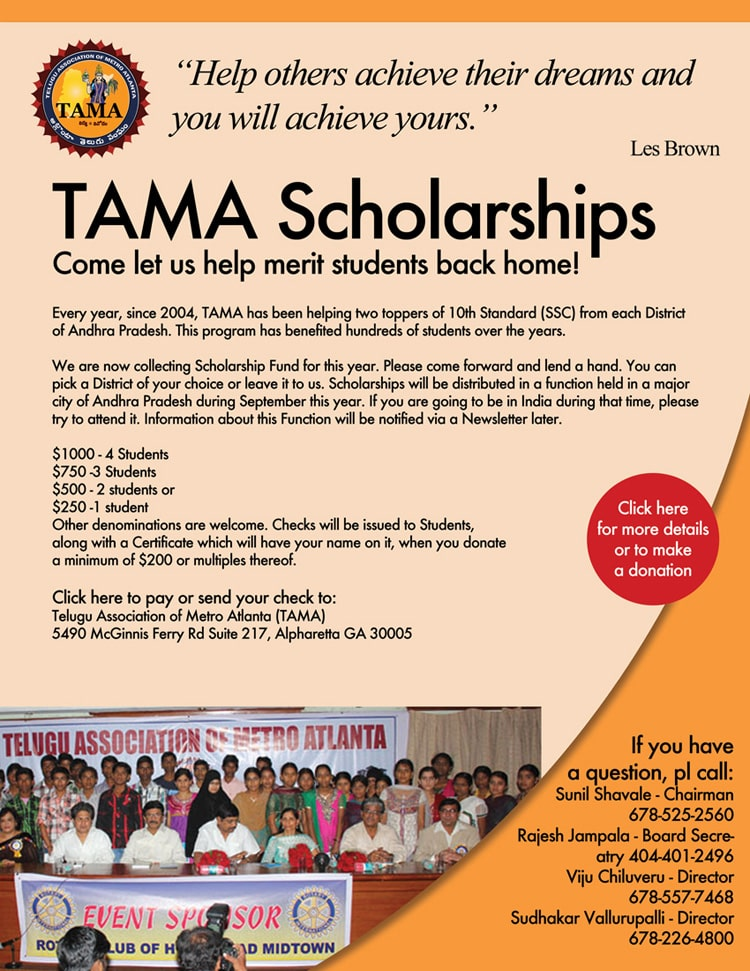
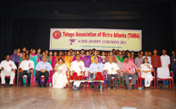
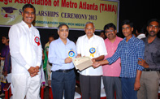
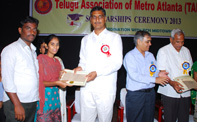
TAMA scholarships presented in Hyderabad
Hyderabad's Ravindra Bharathi was the venue for the Telugu Association of Metro Atlanta (TAMA)'s Scholarship Ceremony on the morning of Sep 14, 2013—and it was a grand success. TAMA gave 46 scholarships to 23 districts of Andhra Pradesh: to one boy and one girl in each district who topped in merit at government schools. Of the 46 students, 43 were able to attend the ceremony, each accompanied by parent, teacher, or guardian. Rajeshwar Thiwari – Principal Secretary, Education Department, Govt of Andhra Pradesh, who introduced the GPA grading system in Andhra Pradesh, was the chief guest. He appreciated TAMA for choosing government and Zilla Parishad (district council) schools in awarding the meritorious students, as did Sri Harish Rao MLA. Sri Sudhakar Reddy MLC expressed his gratitude to TAMA by saying that TAMA is the only organization helping meritorious students among government schools and that recognizing district toppers was the best thing to do. Sri Srinivas Desapathi (praja kavi—people's poet) expressed his words in a song about government Schools, and he appreciated TAMA for doing the scholarship ceremony. Smt Dr. Papolu Rama Devi declared that Indians in America are more generous and kind hearted and always help for a good cause. Sri Jerry Kurian – President, Rotary Club of Hyderabad Mid -Town, Sri Ramu Dosapati, and Sri Satyanarara Ex- MLC were honorary guests also. Lavu Srinivas, Chairman TAMA Board and Mahesh Pawar, TAMA President had collectively decided to continue the scholarship project, and TAMA Executive Committee and Board raised the funds; Anil Bodireddy helped a lot in raising the scholarship fund, and Viju Chiluveru, Director TAMA Board, created the flyer and certificates. Seetha Vallurupalli, Ex-President and Chairman of TAMA, carried out the project with Lavu Srinivas (Chairman), Mahesh Pawar (Presdient), Viju Chiluveru (Board Director). Rotary Club of Hyderabad Mid-Town and founder member Prasad Papolu were keys to success; Sudhakr Reddy MLC helped us a lot; and Ramana Kalli, Jaya Vasireddy, and Prasad Papolu covered expenses in India—without their help the event was not possible—but TAMA donors are the most important part of the project. Every year students, parents, teachers, and school principals express so much happiness and bless TAMA for doing this good deed.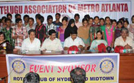